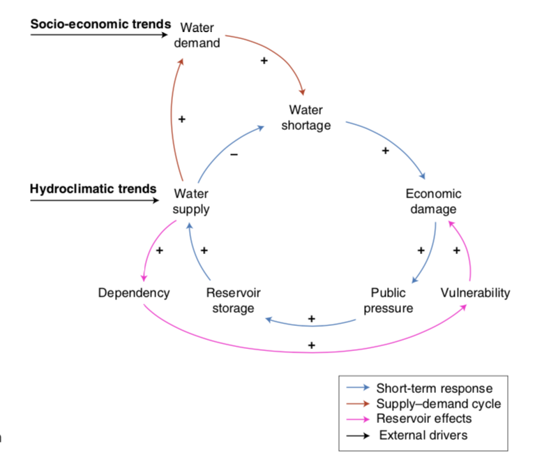
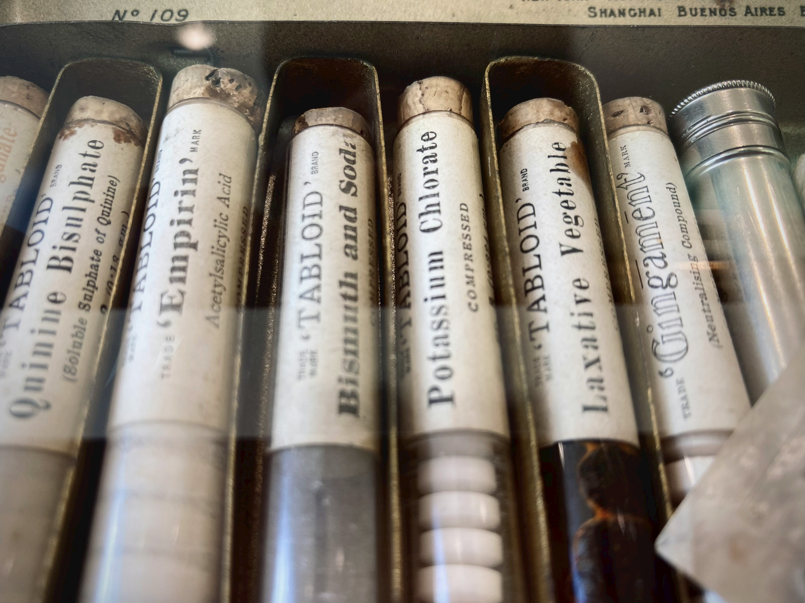
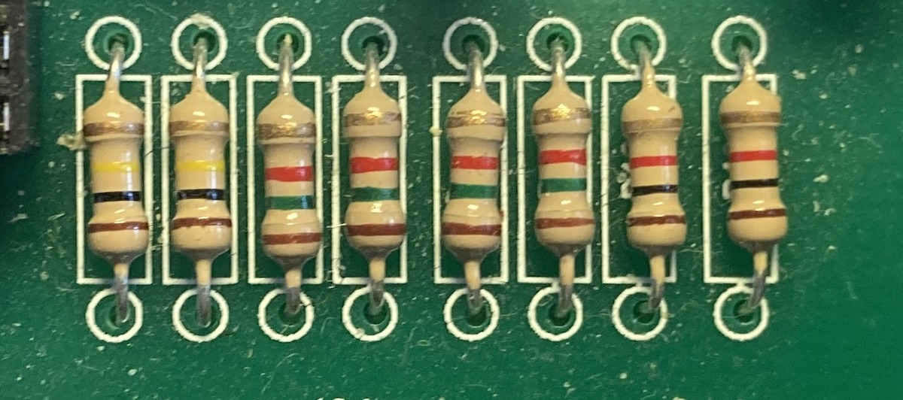

An anthology of notations
This website contains short introductions to a variety of different notations. Some are illustrations of our thesis about notational lifecycles; others are examples of clever design; still others are too important to be left out; and yet more - because we liked them for their own sake.
Notations
Aerobatics notation
Aerobatics is the art of making an aeroplane dance. We were momentarily surprised to discover that there was a formalised notation, but of course there is.
Causal Loop Diagrams
Unlike most notations we have mentioned, Causal Loop Diagrams (CLDs) describe things that change over time and influence each other as they change. They are tools for exploratory understanding.
Chemical Notation
TODO
Mechanisms
Codings, Slips, Defences, and Repairs
Discovering that there has been an error is only half the story: what happens next? How easy is it to guess what was indended and fix it?
Conditionals, or how to say Maybe
Knowing what choice to make is often difficult, and if the issues are presented unhelpfully, matters will be worse. Whether to take an umbrella is hardly a matter of life and death, but many situations are just that: dealing with official regulations (eg. for displaced persons) or medical guidance (eg. for emergencies) are just two examples.